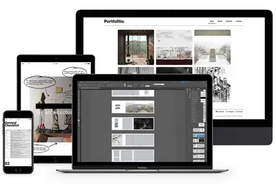

"Much of what I do is inspired by the legacy of my late father. I am a former teacher, scientist, and pharmacy technician who has transitioned into the role of a software architect. With a visionary mindset and a strong sense of creativity, I have the ability to dream big and bring ideas to life. I am passionate about continuous learning, and I find great joy in dedicating hours to study and explore new subjects. Currently, I am focused on learning French and Spanish, with the goal of expanding my language skills to include Italian, Greek, and ultimately Mandarin."
I found a love for computers and coding, and it has become my passion. In the world of technology, I discovered a realm where I can create, innovate, and make a positive impact. This newfound interest has fueled my resilience, becoming my driving force to overcome challenges and pursue a career in the field.
With every setback or obstacle I encounter, my love for computer science and coding provides me with the motivation to persist. I embrace the mindset of a problem-solver, approaching each coding challenge as an opportunity to learn, grow, and refine my skills. The resilience I have developed through my journey allows me to persevere through complex problems and find creative solutions.
I am constantly seeking knowledge and pushing the boundaries of my capabilities. Through continuous learning and self-improvement, I strive to stay at the forefront of technological advancements. The fast-paced nature of the industry requires adaptability, and my resilience enables me to embrace change and thrive in an ever-evolving landscape.
Take a look around!!!.